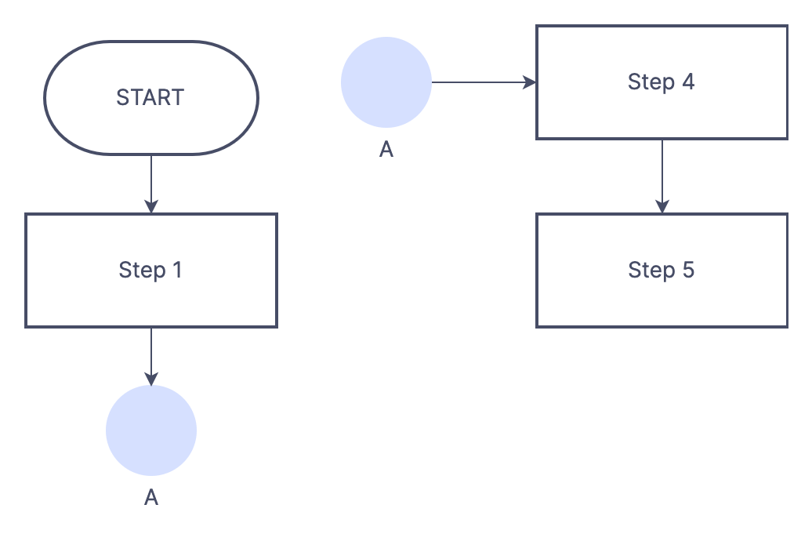

Flow Chart Symbols
Flowchart :Flowchart is a diagrammatic representation of sequence of logical steps of a program. Flowcharts use simple geometric shapes to depict processes and arrows to show relationships and process/data flow.

✬ These are some points to keep in mind while developing a flowchart :-
- ⇛ Flowchart can have only one start and one stop symbol.
- ⇛ On-page connectors are referenced using numbers.
- ⇛ Off-page connectors are referenced using alphabets.
- ⇛ General flow of processes is top to bottom or left to right.
- ⇛ Arrows should not cross each other.
ON Page Connector (For Same page)
Off Page Connector (for Different Page)